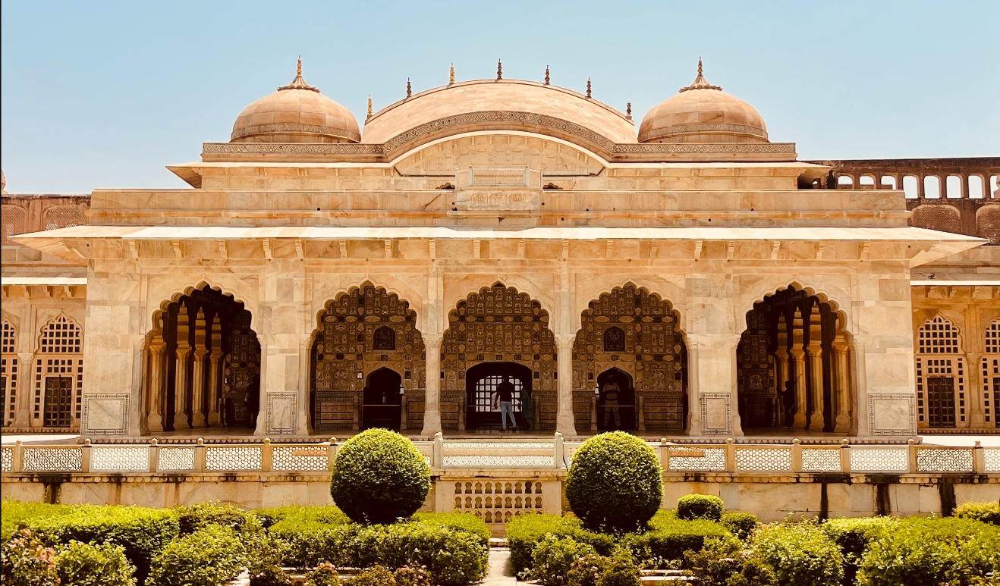

Amber Fort, located on top of the Aravalli Hill, is one of the most spectacular forts in India and a popular tourist attraction in Jaipur. Built by Maharaja Man Singh in 1592, Amber fort was the main residence of Rajput rulers and it was built in red sandstone & marble. The Maotha Lake adds a glamour to the entire building.
The fort is so big that it will take you atleast 2-3 hours to see the whole building in detail. To climb the fort there are two choices for the visitor. Either they can climb the fort through its long staircase or you can take an elephant ride till Amer Fort. But it is more ethical to take a jeep ride than to ride an elephant. The Kesar Kyari or you can say Saffron Garden gradually becomes visible while climbing the fort. It seems that a huge carpet is floating in the middle of the lake. Amber Fort is a UNESCO world heritage site and more than thousands of tourists visit the fort every day.
It has four sections, each with beautifully decorated entrance and courtyard. Main entrance to the fort is called ‘Suraj Pol’ or ‘Sun Gate’ which leads to the first courtyard. This gateway faces the rising sun. The name of the first courtyard is ‘Jaleb Chowk’. Here armies held victory parades on their return from war. Ticket counter is located in the first courtyard of the fort. At the entrance to the right of staircase is the Sila Devi Temple. In the second courtyard is the Diwan-i-Aam. It is a huge hall open from three sides. With beautiful mosaic works, it stand on the support of pillars. Here the king used to hold meetings to hear the petitions of the public. In the third courtyard was the private quarters of the Maharaja and his family which can be entered through the Ganesh Pol or the Ganesh Gate. The colour for painting this gate were extracted from the vegetables. There are two buildings in the courtyard opposite to each other. The buildings to the left of the entrance is called Jai Mandir. Its interior is decorated with stained glass that glowed in candlelight. Due to glass work this building is also called Sheesh Mahal, which was built by Maharaja Man Singh around the 16th century.

Photo by Nikunj Mundra on Unsplash
In the fourth courtyard lived the royal ladies. There are many rooms in this courtyard where the queens lived and with whom the kings used to meet. To the south of this courtyard is the palace of Man Singh, which is the oldest part of this palace. In the centre of this palace is Baradari. This pavilion was used as a meeting place by the queens of the royal family.
There is a street full of shops in the fort which is known as Meena Bazaar. These shops sell art textiles, jewellery and many other items. This was the place where the film Jodha Akbar was shot. Amer Fort is also popular for its light and sound show which is held at night. Many people are unaware that there is a stepwell right next to the huge fort, which was built in the 16th century. The Panna Meena Ka Kund was built for the people of Amer, which was later used by surrounding temples. It is a square stepwell with steps on all four sides and a room on the northern wall.
Amber Fort is open daily from 8 a.m. to 5:30 p.m.